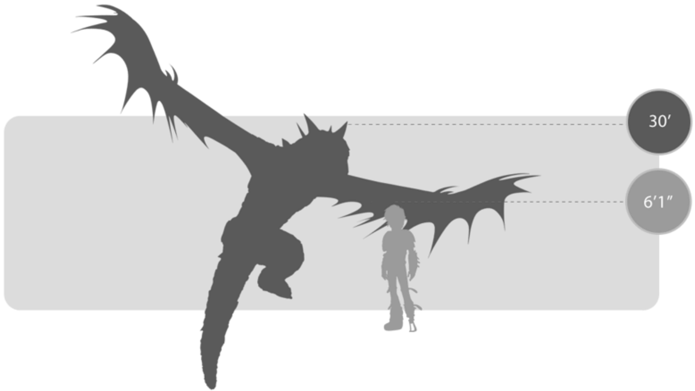
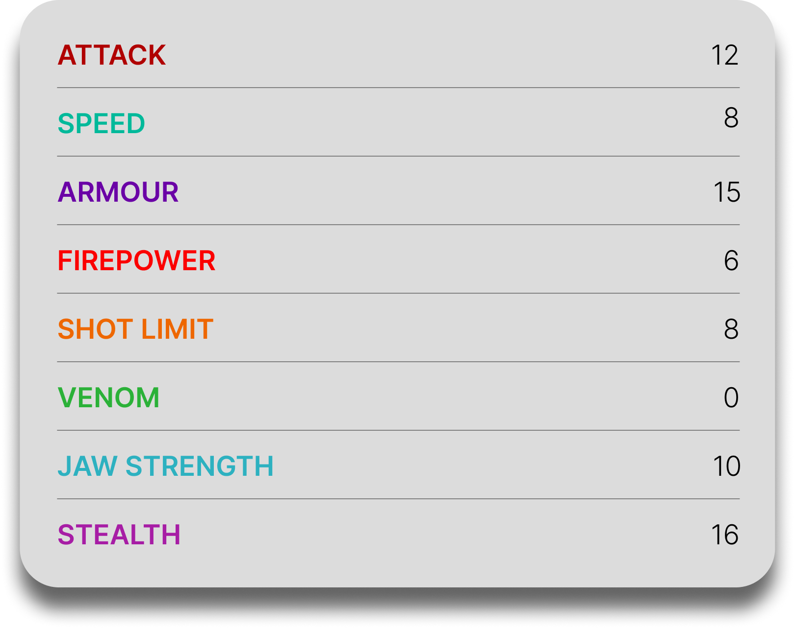
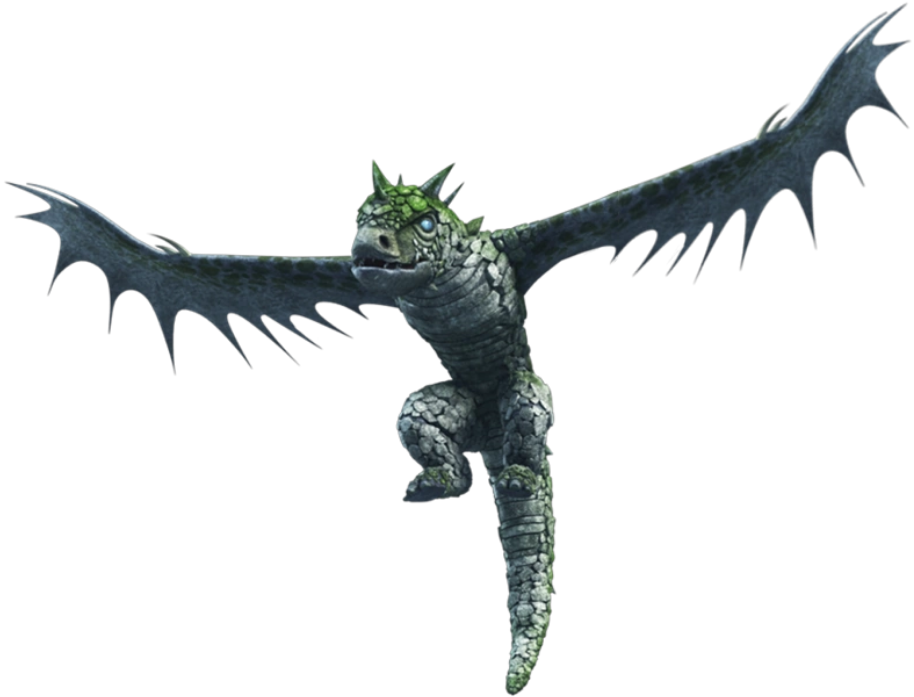

Sentinel
General Overview
The Sentinel is a large dragon belonging to the Boulder Class. Known as the vigilant guardian of Vanaheim’s dragon graveyard, it is feared for its imposing, statue-like appearance and its absolute devotion to protecting the island. Although born blind, the Sentinel has evolved extraordinary senses of hearing and smell, allowing it to detect intruders with remarkable precision and making it one of the most alert and defensive dragons in existence.


Physical Appearance
- Body & Color: It has a massive body covered in tough, rock-like epidermal layers, usually in stony gray tones with mossy green highlights that help it blend into its surroundings.
- Head & Face: Its face is reinforced with prominent scale clusters and rows of bony plates, with short horns on the head, neck, and nose giving it a stern, gargoyle-like look.
- Appendages: It has powerful limbs and a heavy, durable build suited for standing watch for long periods without movement.
- Wings & Tail: Its triangular wings are plated and lined with spines, while its rounded tail helps support its large frame and balanced posture.
Abilities and Combat
- Sonic Screech: It unleashes powerful sonic screams capable of disorienting multiple dragons at once and even knocking them out of the sky.
- Fire Breath: It can breathe strong streams of fire, giving it effective long-range offensive power.
- Downdraft Wingblast: Its powerful plated wings can generate forceful blasts strong enough to drive away or disable airborne threats.
- Enhanced Senses: Though blind, it possesses extremely sharp hearing and smell, allowing it to track friend or foe with precision.
- Stillness & Ambush: It can remain motionless for days at a time, appearing like a stone statue before suddenly attacking intruders.
- Team Coordination: Sentinels work efficiently in groups, surrounding and cornering threats through coordinated movement and sound-based communication.
Behavior and Personality
- Intelligence: It is highly perceptive and capable of identifying who is a threat and who is not, despite its blindness.
- Temperament: Sentinels are territorial, stern, and highly aggressive toward intruders, especially those who threaten Vanaheim.
- Behavior: They spend much of their lives guarding sacred grounds, remaining still and watchful until danger appears.
- Social Traits: Despite their harsh nature, they show a gentler side by caring for sick, old, and dying dragons in their protected territory.
- Diet: Their known diet includes Vanaheim Fruit and fish.
